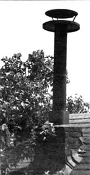
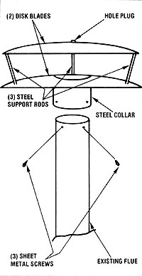

If the woodstove you depend on chronically backpuffs, here's a simple means of modifying rather than blowing, your stack.
One chilly morning, as my family hacked and coughed and waved away the plumes of smoke that the woodstove was belching into our kitchen, it occurred to me that building a new top for the chimney might cure the heater's draft problems.
And as I explored that notion, I became convinced that a chimney cap designed to create a venturi effect would be the answer to my problem. Basically, a venturi is a tube with a constricted, throatlike passage that increases the velocity and lowers the pressure of whatever moves through it. I reasoned that if I were able to incorporate such a passage into my chimney, the exiting flue gases would be speeded up to such an extent that the once sluggish wood smoke could overcome the pressure exerted by the outside air and be expelled efficiently from the top . . . instead of backing up and plaguing members of my household as they sat around the kitchen table trying to eat.
Then, entirely by chance, I literally unearthed the means of translating my design from imagination to rooftop reality. While cleaning out the pig yard, you see, I found several disk blades that had broken free from a harrow . . . and the idea of using the smooth, curved earth-cutters to form the cap took shape.
The accompanying photo and diagram help to explain how I tackled my project. I used two lightweight 14"-diameter disks (you could substitute the convex and concave ends of a water heater tank, with the edges smoothed to reduce air drag) and spaced the rounds about five inches apart by welding three 1/2"-diameter steel rods in place near the outside edges of the disks. (Since the blades are usually made of highcarbon steel, I've found that low-hydrogen welding electrodes are necessary to produce good, solid joints.)
Next, I made a steel collar that barely slipped over my existing flue ... and gouged a hole out of the bottom blade to match the size of the new support. Then I welded the collar to the bottom blade and pressed in some 1/2" wire mesh to discourage the birds. With that done, I plugged the former axle hole in the upper disk . . . using a wide, thick rubber washer and a nut, bolt, and flat washer.
Finally, I installed the whole cap on the flue and secured it with three sheet metal screws. (Guy wires and turnbuckles could be used to help stabilize the setup.)
I'm happy to report that my jerry-built flue cap has eliminated the woodstove's noxious backpuffing. And if your woodburner is giving you similar trouble, I'd suggest that you consider constructing a simple little device like mine.
EDITOR'S NOTE: Although Mr. Ford's design does not constitute a true venturi, a chimney cap of this kind can be effective in some circumstances.
|
 |
 |
|